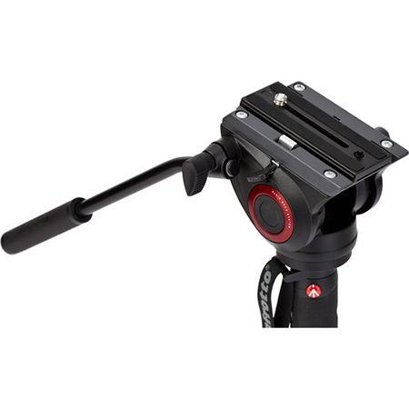
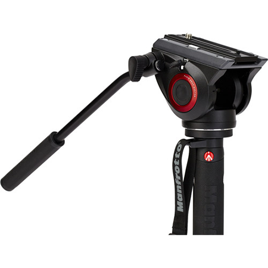
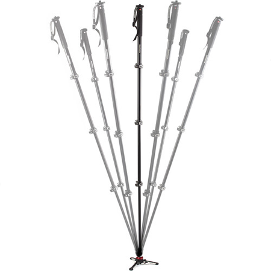

O Monopé Manfrotto MPMXPROA4 180cm possui uma armação compacta reforçada em alumínio com altura máxima de 180cm e tamanho fechado de 56cm, conseguindo suportar equipamentos que possuam peso máximo de 8Kg. Através de uma estrutura reforçada, este modelo conta com 4 seções e 3 travas do tipo Quick Power Lock que proporcionam um bloqueio mais forte no tubo do monopé, eliminando assim movimentos bruscos indesejados. E ainda em sua extremidade superior possui um parafuso padrão 1/4" e 3/8”, onde é possível conectar equipamentos que possuam carga máxima de até 8Kg, o que torna este monopé ideal para satisfazer as necessidades de fotógrafos que usam lentes pesadas, como no caso das fotografias de esportes e vida selvagem, que precisam de um suporte firme e robusto para garantir a maior segurança durante a captura de imagens dinâmicas. No modelo de Monopé Manfrotto MPMXPROA4 também é possível encontrar uma empunhadura emborrachada antiderrapante e uma alça de pulso para fornecer maior conforto e segurança no momento de captura das imagens ou gravações. Além de contar com um tubo de alumínio em forma de D, que permite melhorar sua resistência e ser compatível com a base de fluído completa da Manfrotto MVMXPROBASE (não inclusa), onde pode ser anexado desparafusando o seu pé na parte inferior e fixando-se na base, convertendo assim o monopé fotográfico em um modelo ideal para gravação de vídeos.


